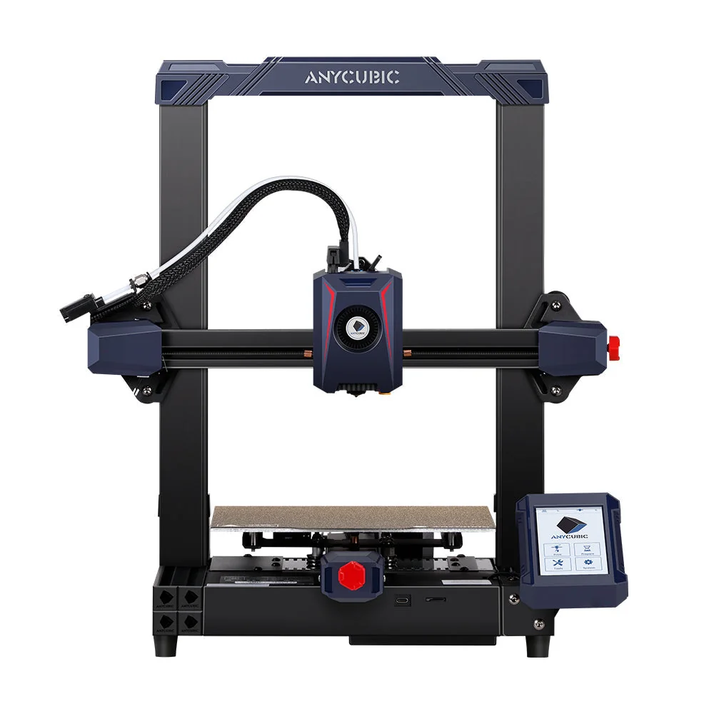

Build volume
250 x 220 x 220 mm stated HWD, i.e. 220 x 220 x 250 mm in X x Y x Z; Anycubic quotes 12.1 L
Advertised dimensions; check usable space and variants.
Entry Kobra 2 bed-slinger: 220x220x250 mm, 300 mm/s claim, LeviQ 2.0 levelling and a 60 W hotend.

250 x 220 x 220 mm stated HWD, i.e. 220 x 220 x 250 mm in X x Y x Z; Anycubic quotes 12.1 L
Advertised dimensions; check usable space and variants.
260 C nozzle temperature ceiling; 0.4 mm replaceable nozzle
Published limits; hardware and firmware limits may differ.
$169.00 on store.anycubic.com, Aug 2026, against a compare-at price of $279.00 - the cheapest machine in this file
Dated listing, not a live offer. Read the configuration and region.
Understand the hardware, explore compatible changes and find a diagnostic starting point when something goes wrong. Expand the specification sections for every recorded value, condition and original reference.
Dimensions, construction and the hardware that moves the print.
| Property and unit | Published value and conditions | Sources and dates |
|---|---|---|
| Manufacturer & exact marketed model name (verify the exact product identity first) | Anycubic Kobra 2 | 1 source |
| Release date (announcement and actual shipping) | Listed on the Anycubic store from 15 May 2023 (Shopify publish date) | 1 source |
| Street price (USD; dated snapshot per entry) | $169.00 on store.anycubic.com, Aug 2026, against a compare-at price of $279.00 - the cheapest machine in this file | 1 source |
| Variants & sibling models — and how to tell them apart (spec-contamination risk) | Base model of a five-way family that is easy to confuse. All of Kobra 2, Kobra 2 Neo and Kobra 2 Pro share the same 220 x 220 x 250 mm build volume, but their speed ceilings differ: Neo 250 mm/s max / 150 typical, Kobra 2 300 / 200, Kobra 2 Pro 500 / 300. The Plus (320 x 320 x 400 mm) and Max (420 x 420 x 500 mm) are bigger but drop the bed ceiling to 90 C where the three small ones reach 110 C. Anycubic's own note: Kobra 2 firmware must be at V3.0.6 or above for the quoted speed | 5 sources
|
| Property and unit | Published value and conditions | Sources and dates |
|---|---|---|
| Build volume X×Y×Z (mm) — advertised vs actually usable | 250 x 220 x 220 mm stated HWD, i.e. 220 x 220 x 250 mm in X x Y x Z; Anycubic quotes 12.1 L | 1 source |
| Machine footprint (mm) & clearance needed (cable/spool overhang) | 486 x 440 x 435 mm stated as HWD, so the desk footprint is about 440 x 435 mm and the height is 486 mm | 1 source |
| Net weight (kg) | 8.4 kg | 1 source |
| Enclosure: open / enclosed; panel material; door/lid | Open frame, no enclosure | 1 source |
| Property and unit | Published value and conditions | Sources and dates |
|---|---|---|
| Kinematics (bedslinger i3 / CoreXY / other) | Cartesian bed-slinger with a gantry frame; Anycubic describes double metal spindles with SG15 bearings on the moving axes | 1 source |
| Z-axis: leadscrew count & type, sync mechanism, anti-backlash | Double-threaded rod Z axis (dual lead screws) | 1 source |
| Property and unit | Published value and conditions | Sources and dates |
|---|---|---|
| Max print speed (claimed, mm/s) | 300 mm/s maximum print speed (Anycubic Lab figure; firmware V3.0.6 or above required) | 1 source |
| Recommended/typical print speed | 200 mm/s recommended print speed (manufacturer figure) - the number to plan around, not the 300 mm/s headline | 1 source |
| Max acceleration (claimed, mm/s²) | 3000 mm/s2 acceleration (manufacturer figure) - modest next to the 20000 mm/s2 of the current Kobra generation | 2 sources
|
Extrusion, heating, leveling and material handling.
| Property and unit | Published value and conditions | Sources and dates |
|---|---|---|
| Type (direct drive / bowden) & design name | Direct drive with a dual-geared extrusion structure | 1 source |
The creator’s replacement cover makes hotend and fan access easier while retaining the stock fan/duct option. It uses the case hardware plus three M3×10 screws; the listing also links a separate custom duct.
Applies to: Creator explicitly lists the Kobra 2 series. Check cover and duct versions together; Neo users additionally need the separate endstop adapter.
| Property and unit | Published value and conditions | Sources and dates |
|---|---|---|
| Max nozzle temp claimed AND firmware max temp limit (both values) | 260 C nozzle temperature ceiling; 0.4 mm replaceable nozzle | 1 source |
| Heater cartridge power (W) | 60 W hotend heater (Anycubic states "upgraded extruder power reaches up to 60 watts") | 1 source |
| Property and unit | Published value and conditions | Sources and dates |
|---|---|---|
| Max bed temp claimed AND firmware limit | 110 C hotbed temperature ceiling | 1 source |
For an uneven first layer, Anycubic directs owners to run leveling and check that the Y-axis bed wheels contact their rails. Its FAQ also describes eccentric-nut and printhead-fastener checks when the bed or head wobbles.
Applies to: Original Kobra 2 wheel and printhead assemblies; this is the Kobra 2 FAQ, not a Pro/Plus/Max calibration procedure.
| Property and unit | Published value and conditions | Sources and dates |
|---|---|---|
| Auto bed leveling: probe technology (inductive / strain gauge / load cell / touch probe) | Anycubic LeviQ 2.0 automatic levelling with smart Z-offset and a user-adjustable Z compensation value | 1 source |
| Property and unit | Published value and conditions | Sources and dates |
|---|---|---|
| Filament runout sensor (type, location) | Filament run-out sensor fitted, with power-loss recovery | 1 source |
| Property and unit | Published value and conditions | Sources and dates |
|---|---|---|
| Part-cooling fan(s): count, size, ducting design | Part-cooling fan rated to 7000 rpm (Anycubic figure) | 1 source |
| Property and unit | Published value and conditions | Sources and dates |
|---|---|---|
| Officially supported filament list | PLA, ABS, PETG, TPU | 1 source |
Firmware, controls, connections and calibration.
| Property and unit | Published value and conditions | Sources and dates |
|---|---|---|
| Display: size, type, touch? | 4.3-inch colour LCD touchscreen | 1 source |
| WiFi (band/standard), Ethernet, USB ports, SD/flash-drive | microSD card | 1 source |
| Property and unit | Published value and conditions | Sources and dates |
|---|---|---|
| Assembly level & time from unbox to first print | Modular assembly - Anycubic states 5 pieces in about 10 minutes | 1 source |
Published safeguards, support terms and independent evidence.
| Property and unit | Published value and conditions | Sources and dates |
|---|---|---|
| Warranty length & support reputation (evidence, not vibes) | One year on the complete machine (excluding gifted and second-hand machines), with component warranty periods that vary by part; the period starts on the delivery date and is suspended while a replacement is in transit. Anycubic states it will follow longer local statutory periods where they apply | 1 source
|
This guide presents the catalog’s sourced record for this exact model. Source dates belong to each reference; a page update does not mean every specification has been rechecked.
Prices are dated listing snapshots, with configuration, regional and sale conditions. They are not current offers. Unknown values remain unfilled.
Firmware, variants and available accessories can change. Read the original reference before making a purchase or planning a process.
Firmware, modifications and troubleshooting links are checked against the model and stated hardware or firmware revision. A creator’s compatibility claim is not a fit test by this site. Official troubleshooting describes a diagnostic route; individual reports do not establish a failure rate.
This review did not verify firmware customization or update guidance, hardware upgrades for this exact model. That is a research gap, not a claim that none exist.